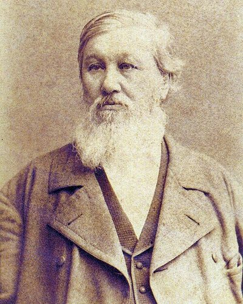

Ideologies / Nationalist
What is Pan Slavism?
Pan Slavism is a political ideology in the Nationalist family. Danilevsky denied that there is one universal civilisation and divided history into separate cultural types, each with its own life cycle. Europe is the Romano Germanic type, and it is by nature hostile to the younger Slavic type led by Russia. He concluded that the Slavs should stop imitating the West and form an all Slavic federation under Russian leadership, with Constantinople as its capital, resting on Orthodoxy and the peasant commune.
The Slavs are a civilisation of their own, not a part of Europe.
Defined from: Nikolay Danilevsky, Russia and Europe (1869)
See how close you are to Pan Slavism Dare a friend to answer as one


Where Pan Slavism stands on 13 axes
Each axis runs from 0 to 100. A score of 50 is the middle. On a classic compass it sits in the Authoritarian Left quadrant.
| Axis | Position | Score | In words |
|---|---|---|---|
| EconomyMarket to Planned | 55 | Balanced | |
| OwnershipPrivate to Collective | 55 | Balanced | |
| RightsLiberty to Security | 70 | Strongly Security | |
| GovernmentDemocracy to Autocracy | 85 | Very strongly Autocracy | |
| StructureDecentralised to Centralised | 65 | Leans Centralised | |
| NationInternationalist to Nationalist | 85 | Very strongly Nationalist | |
| ImmigrationMulticulturalist to Assimilationist | 55 | Balanced | |
| ValuesProgressive to Traditional | 85 | Very strongly Traditional | |
| TechnologyAccelerationist to Precautionary | 55 | Balanced | |
| EnvironmentIndustrialist to Environmentalist | 40 | Leans Industrialist | |
| ReligionSecular to Religious | 80 | Strongly Religious | |
| MilitaryPacifist to Militarist | 80 | Strongly Militarist | |
| TradeFree Trade to Protectionist | 65 | Leans Protectionist |
Ideologies closest to Pan Slavism
- Brazilian Integralism86% alike
- Rexism85% alike
- Neo Eurasianism (Fourth Political Theory)84% alike
- Carlylean Hero Worship84% alike
- Austrofascism82% alike
Its opposite on this map is Crypto Anarchism, at 26%.
Parties near Pan Slavism
- United RussiaRussia. People's Programme (2021)83% alike
- National Liberation FrontAlgeria. Proclamation of 1 November 1954 (1954)80% alike
- uMkhonto weSizwe PartySouth Africa. The People's Mandate (2024)79% alike
- National Resistance MovementUganda. Protecting the Gains (2025)79% alike
Common questions
What is Pan Slavism?
Pan Slavism is a political ideology in the Nationalist family. Danilevsky denied that there is one universal civilisation and divided history into separate cultural types, each with its own life cycle. Europe is the Romano Germanic type, and it is by nature hostile to the younger Slavic type led by Russia. He concluded that the Slavs should stop imitating the West and form an all Slavic federation under Russian leadership, with Constantinople as its capital, resting on Orthodoxy and the peasant commune.
What does Pan Slavism believe?
In one line: The Slavs are a civilisation of their own, not a part of Europe. Its strongest positions are Autocracy, Nationalist, Traditional. Danilevsky denied that there is one universal civilisation and divided history into separate cultural types, each with its own life cycle. Europe is the Romano Germanic type, and it is by nature hostile to the younger Slavic type led by Russia. He concluded that the Slavs should stop imitating the West and form an all Slavic federation under Russian leadership, with Constantinople as its capital, resting on Orthodoxy and the peasant commune.
Who founded Pan Slavism?
Pan Slavism is defined here from Russia and Europe (1869) by Nikolay Danilevsky. The thinker most tied to it is Nikolay Danilevsky (1822 to 1885).
Is Pan Slavism left wing or right wing?
On a classic two axis compass Pan Slavism falls in the Authoritarian Left quadrant, which means the economic centre and the authoritarian side. Left and right hide a lot, though, which is why EthosScales scores it on thirteen separate axes.
How is Pan Slavism different from Brazilian Integralism?
They are close: 86% alike. The biggest gaps are on Structure, where Pan Slavism scores 65 and Brazilian Integralism scores 85, and Ownership, where Pan Slavism scores 55 and Brazilian Integralism scores 40. On each axis, 0 is one end and 100 is the other.
Think this is wrong? Suggest a correction. The scores are editorial estimates.